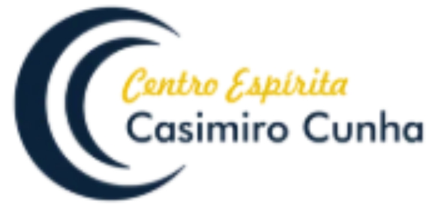
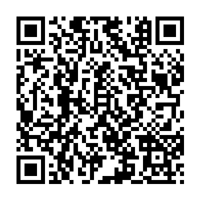
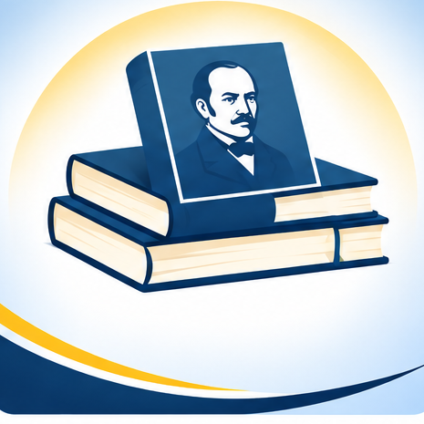
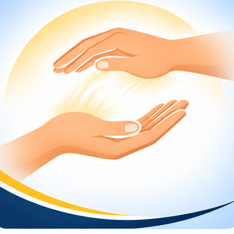

O Centro Espírita Casimiro Cunha é uma organização religiosa sem fins lucrativos, sediada em Belo Horizonte – MG, que tem por missão (objeto e fins):
Há diversas formas de contribuir com o Casimiro Cunha: participando das tarefas e reuniões; auxiliando na limpeza e manutenção; doando alimentos, material de limpeza e outros gêneros; e também por meio de contribuição financeira.
O Casimiro Cunha é mantido integralmente por meio de doações. Estamos recebendo doações sempre aos segundos, terceiros e quartos finais de semana. Nestes dias, a Casa está aberta para suas doações aos sábados e domingos, entre 9h e 11h.
Se deseja contribuir financeiramente, você pode depositar diretamente em nossa conta:
Caixa Econômica Federal
Agência: 1422 | Operação: 1292
Conta: 0005777556065-1
CNPJ: 20.112.579/0001-91
Contribua via PIX

Aponte a câmera do app do seu banco ou use a chave CNPJ:
20.112.579/0001-91
Acompanhe também nossas atividades transmitidas ao vivo pelo YouTube:
Carregando...
Confira abaixo a programação semanal das nossas atividades assistenciais, fraternas e doutrinárias. Clique nos dias da semana para expandir os horários:
Atendimento pessoal aos que desejam conversar sobre questões pessoais e obter esclarecimento, orientação ou consolo à luz do Evangelho.
Domingo: 19h30 às 20h30Arrecadação de gêneros alimentícios para auxiliar famílias em suas necessidades materiais, independente de sua orientação religiosa.
Domingo: 09h00 às 11h00Conheça nossos grupos de estudo sistematizado e capacitação doutrinária:

Estudo aprofundado e contínuo das obras da Codificação Kardequiana.
Domingo: 19h30 às 20h30Estudo de O Livro dos Espíritos, O Evangelho Segundo o Espiritismo e Obras de Emmanuel.
Segunda e Terça-feiraEstudo e aprofundamento dos aspectos mediúnicos, visando o desenvolvimento seguro e o progresso moral do tarefeiro.
Consulte a Secretaria
Promove e incentiva o estudo sobre o tema Passes, preparando o trabalhador para a prática segura na assistência espiritual.
Consulte a SecretariaEm conformidade com as diretrizes estatutárias e de transparência, disponibilizamos os documentos oficiais da nossa casa: